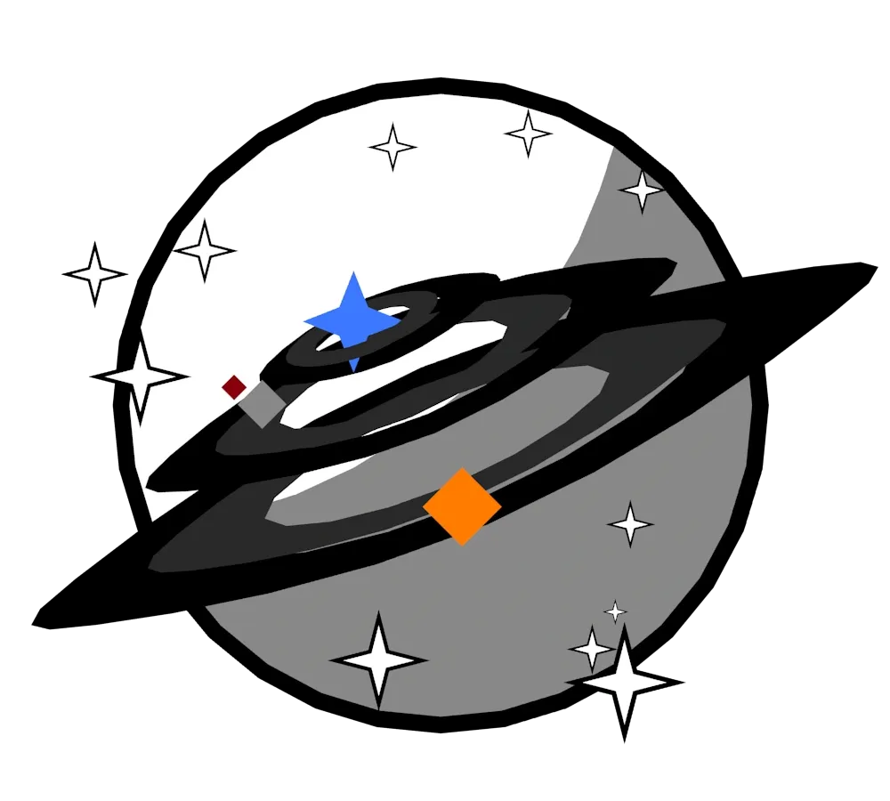

História e desenvolvimento do mundo
Aqui você encontrará informações sobre a história e o desenvolvimento do mundo do jogo.
MAS ALERTA PARA PEQUENOS SPOILERS. Entre com cautela, piloto!
Desenvolvimento do mundo
O mundo de Projeto Wingman se passa em uma Terra alternativa chamade de "O Mundo em Chamas". Nesse mundo, um evento chamado de "A Calamidade" aconteceu aproximadamente 500 anos atrás. Esse evento foi tão marcante que o calendário mesmo começou a contar os anos a partir daquele momento.
A Calamidade em si foi um evento no Círculo de Fogo do Pacífico que causou desastres geotérmicos e apagou a civilização humana como era conhecida.
O período inicial, chamado de "O Frio Longo", foi caracterizado por condições climáticas extremas e a luta pela sobrevivência. Mas depois conseguiram se restaurar e reconstruir a civilização depois de 150 anos, dando início ao período conhecido como "Após a Calamidade".
História do jogo
No período da história do jogo em si, há três facções principais:
- Cascadia, um país com energia geotérmica ilimitada na costa oeste dos Estados Unidos.
- A Federação do Pacífico, uma federação de nações que tem um império mundial. É reconhecido pelas suas características autoritárias e poderes bélicos.
- Sicario, uma corporação de mercenários de tamanho médio, mas claramente com logísticas surpreendentes para o seu tamanho. É a facção do protagonista.
O jogo se passa em um período de guerra entre as facções, mais especificamente, entre Cascadia e a Federação do Pacífico, onde o protagonista é um piloto mercenário que trabalha para a Sicario.
Mais especificamente, ele é Hitman 1 "Monarch", ou no bom e velho português, "Monarca". Ele é um piloto habilidoso e experiente, conhecido por sua coragem e habilidades de combate aéreo excepcionais. Ele é contratado para realizar missões perigosas e desafiadoras, enfrentando inimigos poderosos e participando de batalhas aéreas intensas. Também conhecido por ser mudo, inspirado pelo personagem de Ace Combat, Mobius 1 e outros protagonista da mesma franquia.
Os outros quatro membros do time Hitman são:
- WSO (Oficial de Sistema de Armas) de Hitman 1 "Prez"
- Hitman 2 "Diplomata"
- Hitman 3 "Cômica"
- AWACS (Sistema de Aviso e Controle Aerotransportado) "Galáxia"
Os principais antagonistas são o Time Escarlate da Federação do Pacífico, o melhor time de mantedores da paz que foram acionados depois das ações do protagonista. O seu líder em especial, Escarlate 1, é reconhecido na comunidade pela sua obsessão com Monarca depois de ser derrotado pelo mercenário três vezes em batalhas aéreas, o que o leva a desenvolver uma rivalidade intensa com ele.
A história do jogo é cheia de reviravoltas e momentos emocionantes, com personagens complexos e uma narrativa envolvente que mantém os jogadores engajados do início ao fim.
Galeria do jogo

Imagem do Monarca depois de derrotar Escarlate 1 na última missão "Kings", ou Reis no português.

Imagem do Monarca engajando múltiplos esquadrões da Federação na missão "Guerra Fria".

Imagem do local da primeira missão do jogo, a missão "Bandeira Negra", onde o protagonista intercepta um ataque de mercenários contra um navio de cargo cheio de cordium da Federação chamada Meilynx.

Imagem do time do protagonista, o Time Hitman, que é composto por três pilotos mercenários, incluindo o protagonista Monarca.

Imagem do time antagonista, o Time Escarlate, que é o melhor time de mantedores da paz da Federação do Pacífico e o principal antagonista do jogo.

Imagem do protagonista, Monarca, o piloto mercenário habilidoso e experiente que é conhecido por sua coragem e habilidades de combate aéreo excepcionais.

Imagem do Hitman 2, o Diplomata, filho da dinastia política Kennedy. O segundo melhor piloto e rebelde da sua família.
Imagem do WSO de Monarca, o Prez, e a mecânica-chefe do time Hitman. Conhecida por sofrer com o estilo de pilotagem do Monarca e ainda sim ser brincalhona.

Imagem do AWACS do Time Hitman, a Galáxia, conhecido por ser a melhor AWACS do jogo e por ter uma personalidade forte e engraçada de quando era DJ na capital da Federação. Mas consegue ser sério se a situação ficar tensa pro time.

Imagem da Hitman 3, a Cômica, a melhor piloto do Time Hitman e uma das melhores pilotos do jogo. Era brincalhona no passado, mas agora é a mais séria do time.